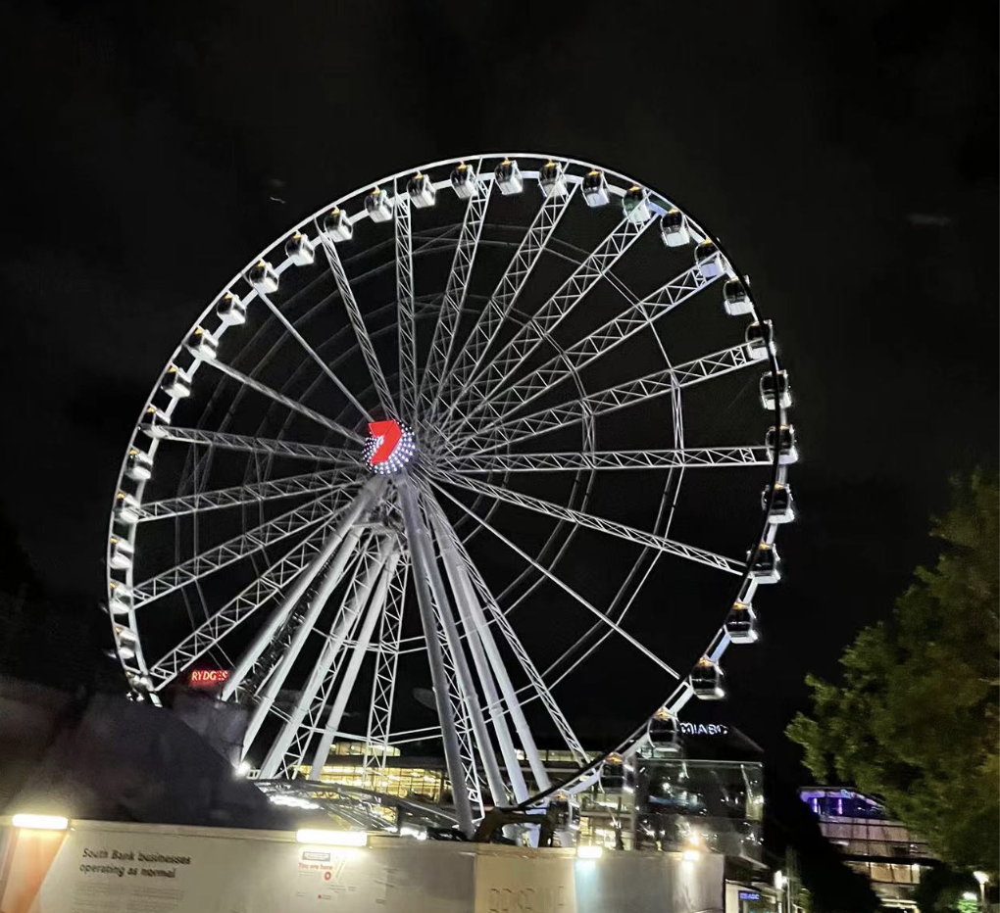
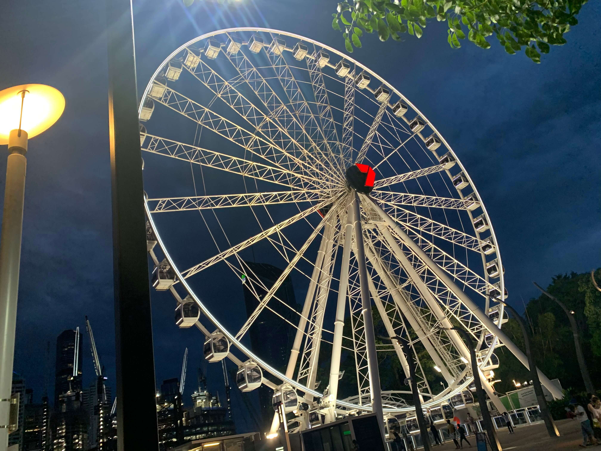
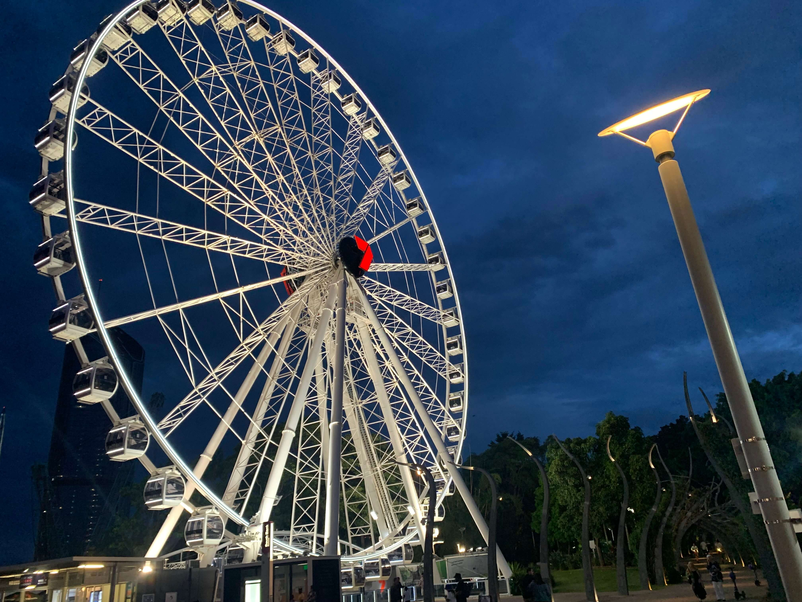

The Ferriswheel of Brisbane
The Ferriswheel of Brisbane
Location: Stanley St Plaza, South Brisbane QLD 4101
Description: Head down to the Boat Pool on any given day and you’ll see people of all ages splashing around in the cool, blue water and lapping up some of Queensland’s famous sunshine. Similar to Streets Beach, the Boat Pool is free to use and is patrolled by qualified lifeguards all year round. The lifeguards' hours change throughout the year, so please contact the South Bank Visitor Centre on tel: 07 3029 1797 to find out when they are patrolling.
Pictures
- 
- 
- 